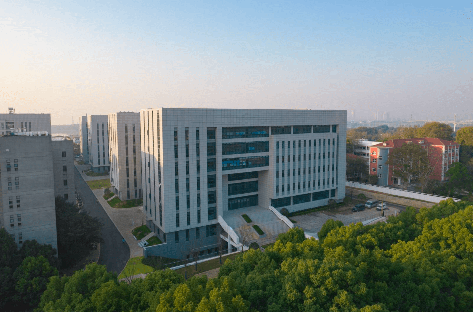
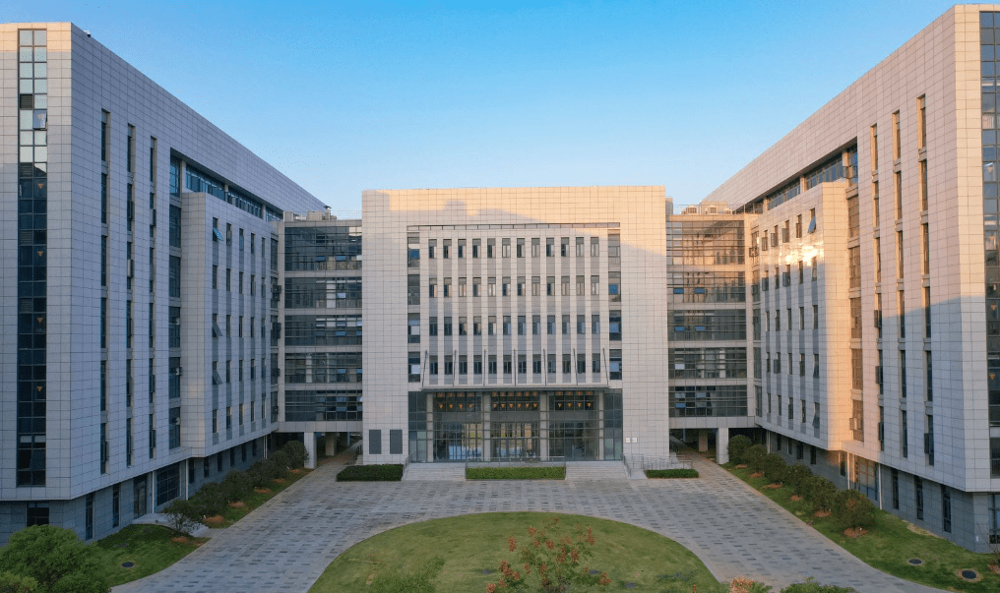

The College of Animal Science & Technology and College of Veterinary Medicine is one of the earliest departments established at Huazhong Agricultural University. In 1898, Zhang Zhidong, the governor of Hubei and Hunan provinces, founded the Hubei Agricultural School (predecessor of Huazhong Agricultural University) and invited those who were interested in pursuing agricultural studies to join the school and study plant cultivation and animal husbandry. In 1902, the school was renamed Hubei Higher Agricultural School and began offering three disciplines: agriculture, animal husbandry, and forestry. In 1916, the school was divided into two, and the Hubei Second Senior Agricultural School established the Department of Veterinary Medicine (3-year program).

In 1952, as part of a nationwide restructuring of colleges and departments, the Animal Husbandry and Veterinary Department was established at Huazhong Agricultural College, with Professor Qin Liran, a renowned veterinarian, serving as the first department head. In October 1995, the College of Animal Science and Veterinary Medicine was established at Huazhong Agricultural University, and in July 2002, it was renamed the College of Animal Science and Technology and the College of Veterinary Medicine.
Over the more than 70 years since its establishment, the college has upheld the principles of “unity, rigor, pragmatism, and innovation” and carried forward the spirit of “innovation, creation, and entrepreneurship.” It has adhered to the concept of “talent-oriented, technology-driven, and industry-advancing,” making great efforts to promote the development and growth of the college. As a result, the college has developed a distinctive discipline advantage and a comprehensive educational system.
The college comprises nine departments, including the Department of Animal Genetics and Breeding, Department of Animal Nutrition and Feed Science, Department of Animal Reproduction and Special Economic Animals, Department of Intelligent Animal Husbandry, Department of Basic Veterinary Medicine, Department of Preventive Veterinary Medicine, Department of Clinical Veterinary Medicine, Department of Veterinary Pharmacology, and Department of Public Health.
Currently, the college has 216 staff members, including 171 full-time faculty members (86 professors, 79 associate professors), 25 technical personnel, and 20 administrative staff. There are also 59 postdoctoral researchers.
There are currently two undergraduate programs in Animal Science and Veterinary Medicine, both of which are national characteristic and Hubei provincial brand programs. They have been selected as the first batch of national first-class professional construction sites. The college offers three doctoral degree programs in Animal Science, Veterinary Medicine, and Veterinary Medicine (professional degree). Additionally, it has two postdoctoral research stations in Animal Breeding and Reproduction, and Animal Nutrition and Feed Science. The college also offers eight secondary disciplines, including Animal Genetics and Breeding, Animal Nutrition and Feed Science, Special Economic Animal Rearing, Animal Production and Livestock Engineering, Basic Veterinary Medicine, Preventive Veterinary Medicine, Clinical Veterinary Medicine, and Veterinary Public Health and Food Safety. Each year, the college admits over 350 undergraduate students, 550 master’s students, and 180 doctoral students. Currently, there are 3,715 students enrolled, including 1,668 undergraduates, 1,356 master’s students (8 international students), and 691 doctoral students (50 international students).

In recent years, the disciplines of Animal Science and Veterinary Medicine have ranked among the top universities in China. In 2017, both programs were selected as “Double First-Class” disciplines by the national government and received an A+ rating in the fourth round of discipline evaluation. In 2021, both programs were once again selected as “Double First-Class” disciplines.
The college has 38 research platform bases at the provincial and ministerial levels or above. Among them, there are 10 national level platform bases, 5 international science and technology cooperation platform bases, 23 provincial and ministerial level platform bases.
The college has strong scientific research capabilities and productive results. Since the 13th Five-Year Plan period, it has received over 1 billion yuan in research funding, and publishes over 350 SCI research papers annually (including nearly 30 high-level papers). The college has been honored with one second-class National Science and Technology Progress Award, two second-class National Science and Technology Invention Awards, one National Innovation Award, one first-class Ministry of Education Scientific and Technological Progress Award, one first-class Ministry of Education Natural Science Award, one first-class National Agriculture, Animal Husbandry, and Fisheries Harvest Award Contribution Award, five first-class Hubei Provincial Science and Technology Progress Awards, three first-class Technical Invention Awards, and one first-class Achievement Promotion Award.
The college is committed to serving development and has deepened the cooperation with enterprises, providing support for the high-quality development of industries. It has established in-depth cooperation with more than 40 companies, including Yangxiang, Keqian, Huisheng, Luoniu Mountain, COFCO, Zhengda, Jin Xu, and Yuchong. The college has explored and developed models such as the HZAU-Yangxiang integrated development model of agriculture, science, and education, and the HZAU-Keqian model of integrated innovation in industry, academia, and research, which have become exemplary models for school-enterprise cooperation in the agricultural industry.
The college upholds the concept of open education and actively engages in international cooperation and exchanges. It has established good cooperation relationships with universities and research institutions in more than 10 countries, including the United States, the United Kingdom, Canada, Australia, Germany, Italy, France, South Korea, Portugal, Japan, Mozambique, Pakistan, and New Zealand. Since the 13th Five-Year Plan period, the college has hosted a series of high-level international conferences, including the 8th Asian Pig Diseases Conference, the 2nd One Health World Young Veterinarians Conference, the International Conference on Animal Functional Genomics and Health, the International
Symposium on Milk Composition and Biomarker Detection, and the International Symposium on Parasitic Pathogen Biology. These conferences have greatly facilitated exchanges between the college and domestic and international institutions in the same field.

The college adheres to the educational philosophy of “characteristic development and connotation enhancement” and aims to be a distinctive, high-level, research-oriented institution. It vigorously implements strategies such as building distinctive institutions, ensuring quality education, cultivating talents, and promoting scientific and technological development. The goal is to become a leading and influential first-class college domestically and internationally in terms of overall level and strength in key disciplines by the end of the 14th Five-Year Plan period.